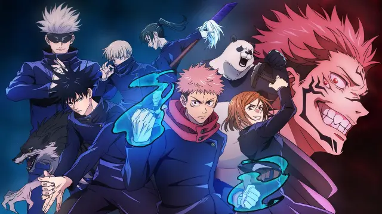

- 


El 6 de julio pasado se estrenó la nueva temporada de “Jujutsu Kaisen”, la obra creada por el mangaka Gege Akutami que no solo ha sido muy popular en el manga, sino que también en el anime. Y que actualmente la serie se puede ver en Chile a través de la plataforma de streaming Crunchyroll. Además, se estrenó en 2021 la película “Jujutsu Kaisen 0“, que fue uno de los largometrajes de anime más vistos en los cines japoneses. Cabe recordar que la primera entrega de la serie abarca el “Arco de La Pintura de la Muerte“, que en términos del manga serían los capítulos 55 a 64. Si la adaptación sigue por el mismo camino, la segunda temporada se enfocará en en el “Arco del pasado de Gojo“, que llega hasta el capítulo 79.

Todos tenemos alguna inspiración para poder crear a un personaje, incluso de la familia del creador. En una entrevista, Akutami reveló que su inspiración al crear a Yuji Itadori se basó en su hermano mayor, que era básicamente su polo opuesto. El autor señaló que su hermano era mejor en todo, ya sea en deportes o estudios, y gracias a esa virtud, aplicó esta lógica al infalible Yuji. Aunque, asumimos que el personaje es el mejor rasgo de Akutami y su hermano, ya que es un héroe que está dispuesto a sacrificar su vida para salvar a otros.

Explora el emocionante universo de Jujutsu Kaisen, donde los hechiceros luchan contra maldiciones y demonios para proteger a la humanidad.